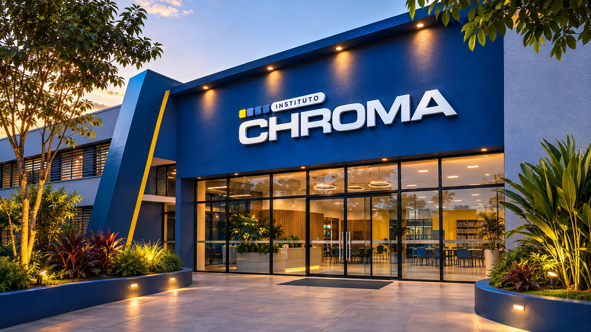

Diadema
Rua São Jorge, 208, 1º andar, Centro — Diadema, SP, Brasil.
- Pedagógico
- (11) 4308-7511
- WhatsApp informado em aula inaugural
- (11) 94710-8867
Encontre as localizações identificadas nos materiais da Chroma e escolha o melhor canal para conversar.
Unidades e referências de localização encontradas em materiais institucionais. Para confirmar visita, consulte o atendimento correspondente.
Rua São Jorge, 208, 1º andar, Centro — Diadema, SP, Brasil.
Avenida Itavuvu, 860 — Sorocaba, SP, Brasil.
Avenida Dr. Armando Pannunzio, 1478 — Sorocaba, SP, Brasil.
Local citado em apresentação da Chroma. A condição atual de atendimento e eventual vínculo como unidade própria precisam de confirmação antes de divulgação definitiva.
Consultar atendimento ↗
Nossa comunicação visual representa uma escola que valoriza ambientes organizados, atenção aos estudantes e acesso às ferramentas de aprendizagem. Para conhecer as instalações reais, agende uma visita.
A imagem é uma proposta visual criada com IA. Não representa nenhuma fachada ou instalação existente da Chroma.
Solicitar informações sobre visitas